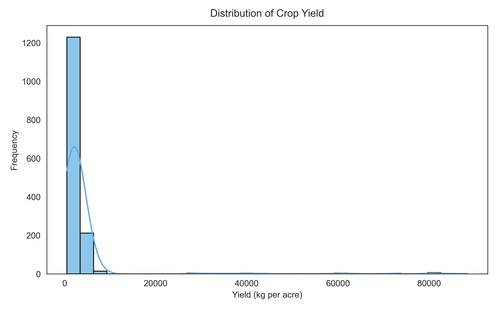
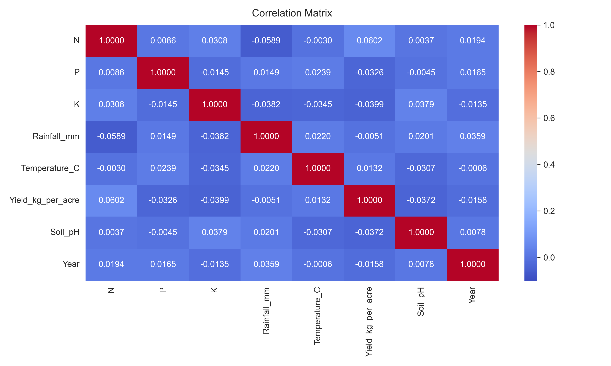

AI-Based Crop Yield Prediction Using Soil and Weather Parameters.
The objective of this project is to develop a machine learning model to predict crop yield (kg per acre) using soil nutrients, weather conditions, fertilizer usage, and weather-related features.
Since the target variable (Yield_kg_per_acre) is a continuous numerical value, this problem is treated as a regression problem.
The dataset was provided by the project mentor as part of the Infosys Springboard Virtual Internship.
Dataset details:
pandas, numpy, seaborn, matplotlib, scikit-learn).The dataset was loaded using:
df = pd.read_csv("dataset.csv")
df.head()
| # | State | Crop | Soil_Type | Fertilizer | N | P | K | Rainfall_mm | Temperature_C | Yield_kg_per_acre | Soil_pH | Year |
|---|---|---|---|---|---|---|---|---|---|---|---|---|
| 0 | Karnataka | Soybean | Loamy | DAP | 56 | 41 | 51 | 120 | 31.06 | 1839 | 6.82 | 2003 |
| 1 | Odisha | Cotton | Red Soil | Urea | 29 | 36 | 112 | 247 | 33.97 | 1062 | 6.41 | 2002 |
| 2 | Punjab | Groundnut | Red Soil | Compost | 37 | 38 | 177 | 142 | 24.21 | 1463 | 7.06 | 2015 |
| 3 | Gujarat | Wheat | Red Soil | Compost | 58 | 77 | 129 | 227 | 30.85 | 2373 | 5.93 | 2022 |
| 4 | Andhra Pradesh | Cotton | Clay | Organic | 108 | 61 | 63 | 263 | 37.03 | 1497 | 6.24 | 2017 |
df.info()
<class 'pandas.DataFrame'> RangeIndex: 1500 entries, 0 to 1499 Data columns (total 12 columns): # Column Non-Null Count Dtype --- ------ -------------- ----- 0 State 1500 non-null str 1 Crop 1500 non-null str 2 Soil_Type 1500 non-null str 3 Fertilizer 1500 non-null str 4 N 1500 non-null int64 5 P 1500 non-null int64 6 K 1500 non-null int64 7 Rainfall_mm 1500 non-null int64 8 Temperature_C 1500 non-null float64 9 Yield_kg_per_acre 1500 non-null int64 10 Soil_pH 1500 non-null float64 11 Year 1500 non-null int64 dtypes: float64(2), int64(6), str(4) memory usage: 140.8 KB
df.describe()
| N | P | K | Rainfall_mm | Temperature_C | Yield_kg_per_acre | Soil_pH | Year | |
|---|---|---|---|---|---|---|---|---|
| count | 1500.000000 | 1500.000000 | 1500.000000 | 1500.000000 | 1500.000000 | 1500.000000 | 1500.000000 | 1500.000000 |
| mean | 73.435000 | 61.282000 | 102.115000 | 176.609000 | 28.148547 | 7881.852667 | 6.799247 | 2012.090000 |
| std | 37.750002 | 33.257422 | 54.952863 | 75.776182 | 5.783168 | 20673.333805 | 0.724098 | 7.293218 |
| min | 10.000000 | 5.000000 | 10.000000 | 50.000000 | 18.020000 | 502.000000 | 5.500000 | 2000.000000 |
| 25% | 41.000000 | 32.000000 | 56.000000 | 113.000000 | 23.132500 | 1202.750000 | 6.120000 | 2005.000000 |
| 50% | 70.000000 | 61.000000 | 100.000000 | 175.000000 | 28.450000 | 1673.500000 | 6.795000 | 2012.000000 |
| 75% | 106.000000 | 91.000000 | 149.000000 | 242.000000 | 33.180000 | 2571.750000 | 7.400000 | 2019.000000 |
| max | 139.000000 | 119.000000 | 199.000000 | 299.000000 | 37.960000 | 89946.000000 | 8.000000 | 2024.000000 |
Observations:
Missing values were checked using:
df.isnull().sum()
Duplicate rows were checked using:
duplicates = df.duplicated().sum()
Results:
Thus, no additional cleaning was required.
plt.figure(figsize=(8,5))
sns.histplot(df['Yield_kg_per_acre'], bins=30, kde=True)
plt.title("Distribution of Crop Yield")
plt.xlabel("Yield (kg per acre)")
plt.ylabel("Frequency")
plt.show()

Observation:
plt.figure(figsize=(10,6))
sns.heatmap(df.corr(numeric_only=True), annot=True, cmap='coolwarm')
plt.title("Correlation Matrix")
plt.show()

Observation:
Since machine learning models cannot process categorical text data directly, categorical features were converted using one-hot encoding:
X = df.drop("Yield_kg_per_acre", axis=1)
y = df["Yield_kg_per_acre"]
X_encoded = pd.get_dummies(X, drop_first=True)
The dataset was split into features (X) and target variable (y) before applying encoding.
Result:
Numerical features had different ranges (e.g., rainfall in hundreds, pH in single digits). To ensure uniform scaling of numerical features, StandardScaler was applied only to the following columns:
scaler = StandardScaler()
numerical_cols = ['N', 'P', 'K', 'Rainfall_mm', 'Temperature_C', 'Soil_pH', 'Year']
X_encoded[numerical_cols] = scaler.fit_transform(X_encoded[numerical_cols])
print("Final dataset shape after preprocessing:", X_encoded.shape)
After scaling:
These were resolved through proper environment setup and debugging.
Milestone 1 successfully completed dataset preparation and preprocessing steps required for machine learning. The data is now clean, structured, encoded, and scaled, making it ready for building regression models in the next milestone.
Bandi Siri
siribandi17@gmail.com